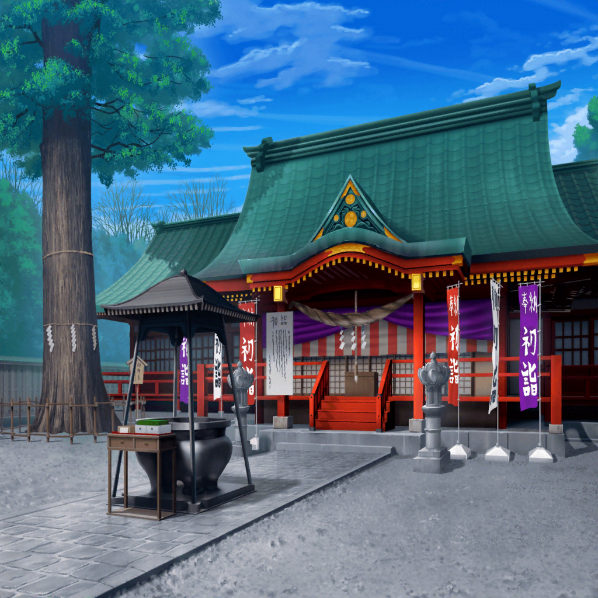

神社 参道
こころ
どうかしら、イヴ！
何か手がかりはあった？
イヴ
いえ……ダメですね……
こころ
うーん……宝物探しってなかなか難しいわね！
次はどこを探しに行こうかしら！
こころ
……あら？
向こうにたくさん人がいるわね！
イヴ
何か、やっているみたいですね……
かけ声？ のようなものが聞こえます……
こころ
なんだか楽しそうね！
イヴ、行ってみましょう！
イヴ
あっ、ココロさん……っ！
待って下さい〜！

神社 広場
こころ
ここでは、お餅つきをしていたのね
イヴ
はあ……はあ……ココロさん、振り袖なのに
どうしてそんなに速く走れるんですか……！？
こころ
……そうよ！
イヴ、ここにいる人達に巾着袋のことを聞いてみましょう
イヴ
たしかに、何か知っているかもしれませんね……！
あの、すみません！ 巾着袋の落とし物を
見ませんでしたか？
氏子
いいや、見てないけど……
もしかして、落としちゃったのかい？
イヴ
はい……そうなんです……
氏子
そうか……
それなら僕が他の人にも聞いてみるから、
その間、君達は餅つき、やってみないかい？
イヴ
ええっ！？ そ、そんな……申し訳ないですし、
お餅つき、やったことないので……
氏子
あはは、気にしなくていいよ。
それに餅つきは縁起事だから、やってみたら
何かいいことがあるかもしれないし
イヴ
で、でも……
こころ
いいじゃない！
やりましょう、イヴ！
とっても楽しそうよ！
こころ
それーっ！
イヴ
すごい……お餅って、
つくと本当にペッタンっていうんですね！
こころ
見てみて！ お餅がこ〜〜んなに伸びてる！
すっごく楽しいわ！ イヴもやってみましょう！
イヴ
わかりました！
わっ……杵って思ったより重いんですね……
イヴ
……きゃっ！
イヴ
う、臼を思いっきり叩いてしまいました……
なかなか難しいですね……
こころ
イヴ、もっと笑顔、笑顔よ！ 巾着袋を見つけるために、
今はお餅つきを楽しみましょう！
イヴ
わ、わかりました！
笑う門には、福が来ると言いますし！
イヴ
（え、笑顔……笑顔……！
でも、どうしても巾着袋のことは、
気になってしまいます……）
こころ
イヴ～！ 笑顔よ～！
イヴ
は、はい〜〜！
イヴ
ふう……
お餅つき……なかなか大変でしたね……
こころ
ええ、でもとっても楽しかったわね！
イヴ
は、はい……
楽しかったのは楽しかったのですが……
結局、巾着袋は見つかりませんでした……
こころ
あら、あっちの方でも何か始まるみたいね！
あそこにもたくさん人が集まってるわよ！
とっても楽しそうにしてるわね！ 行ってみましょう！
イヴ
こ、ココロさん……っ！？
ちょ、ちょっと待ってください……っ！
私は巾着袋を……っ！
イヴ
行ってしまいました……
確かにあそこにいる人達はみんな楽しそうに
していますけど、今の私はなかなかそんな気分には……
イヴ
……はっ！ もしかしてココロさんは、
私に福が来るように笑顔になれる楽しい場所へと
導いてくれているんでしょうか……？
イヴ
……わ、わかりました。
こうなったらココロさんに身を任せるしかありませんね！
こ、ココロさん、今行きまーすっ！
神社 凧揚げ会場
こころ
あら、ここでは凧揚げが始まるのね！
イヴ
わあ、すごいです！
こんなに大きな凧は初めて見ました……！
本当にこんなに大きな凧が空に飛ぶのでしょうか？
こころ
そうだわ！
今、とてもいいことを思いついたわ！
イヴ
な、なんですかココロさん！
ぜひ、聞きたいです！
こころ
あの凧の上に乗って、空から探せば
きっとすぐに見つかるんじゃないかしら！
イヴ
す、すばらしいアイディアです……っ！
確かに時代劇で忍者がそうやって、
城の中を探っているのを、見たことがあります！
こころ
それじゃあ、早速聞いてくるわ！
イヴ
ダメでしたね……
いい考えだと思ったんですが……
こころ
がっかりすることないわ！
代わりに凧揚げ大会に参加してもいいって
言ってくれたじゃない！ きっと楽しいわよ！
イヴ
でも……巾着袋がまだ見つかっていません……
そんな状態で、私は……
こころ
凧揚げをしてイヴも笑顔になりましょう！
それにこの大きな凧に思い思いの絵を
描いていいなんてとってもステキだわ！
こころ
……そうよ、イヴ！
今、とてもいいことをひらめいたわ！
これなら絶対にイヴの巾着袋が見つかるはずよ！
こころ
これをこうして……完成よ！
イヴ、この凧をあげて、巾着袋を見つけましょう！
イヴ
……こ、この凧をあげれば、
私の巾着袋は本当に見つかるのでしょうか……？
け、けどわかりました、ココロさんを信じてやってみます！
イヴ
えーっと凧紐を持って、
風が吹いたら引っ張る……
イヴ
……えいっ！
こころ
とっても上手ね、イヴ！
初めてとは思えないわ！
イヴ
あ、ありがとうございます！
イヴ
それにしても……ココロさん、
何の絵を描いたんでしょう……？
イヴ
……『探しています』？
あ！ 巾着袋の絵！
もしかして、私の巾着袋のことを描いてくれたんですか？
こころ
ええ！ これを揚げたら、巾着袋を見つけた人に
気付いてもらえるかもしれないって思ったのよ！
イヴ
ココロさん……すごいです！
素晴らしいアイディアです！
こころ
ふたりでたくさんの人に見てもらえるように、
頑張って揚げましょう！
イヴ
……はい！
こころ
とってもステキな笑顔ね、イヴ！
これなら、きっと見つかるわ！